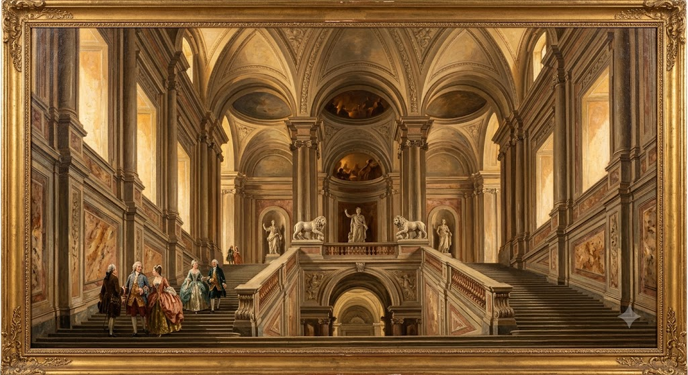
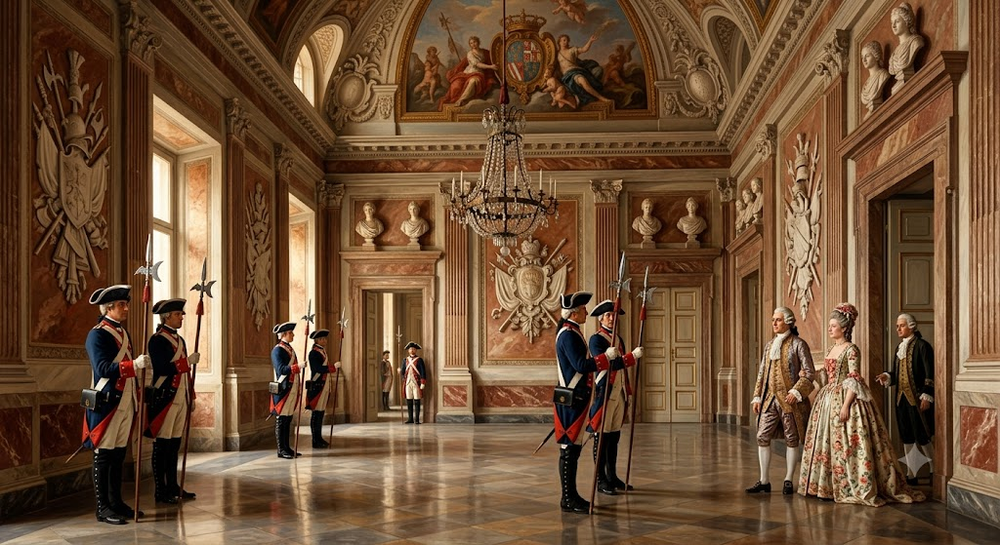
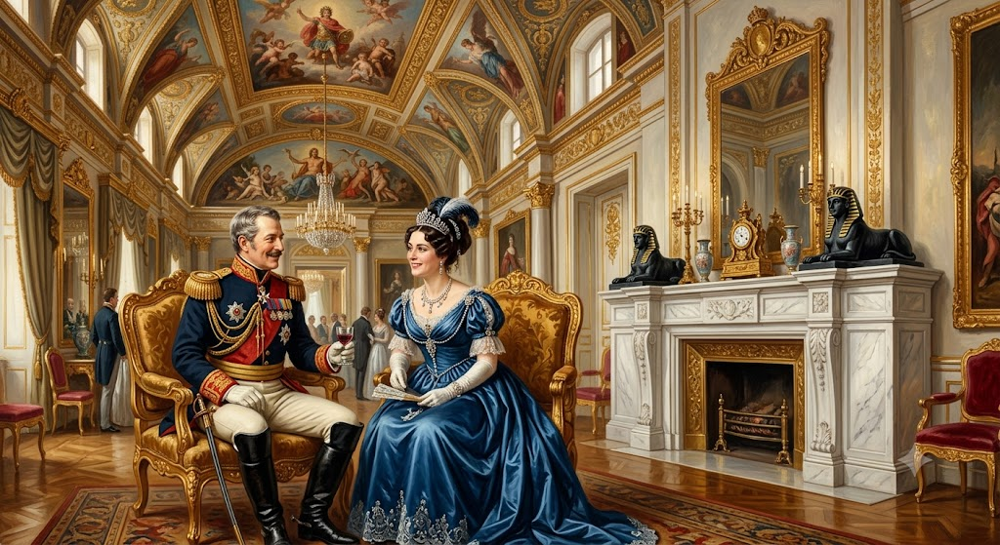
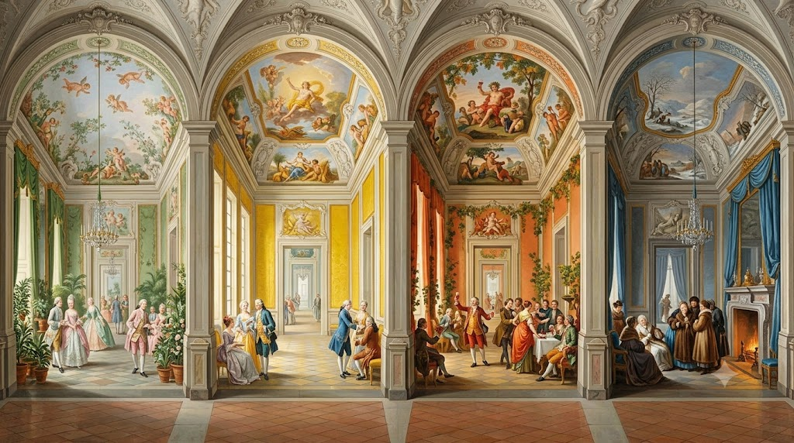
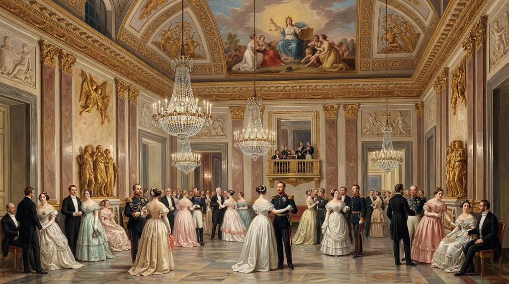
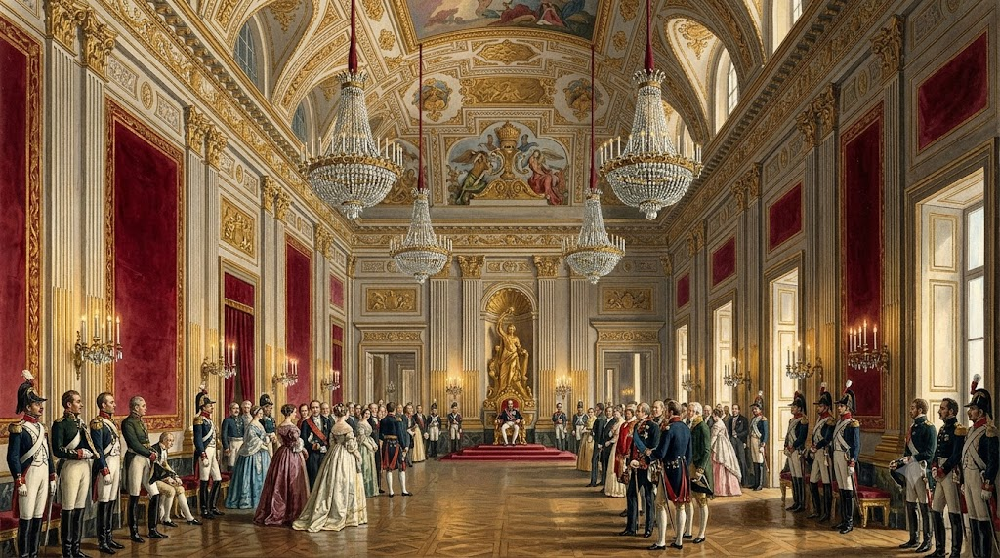
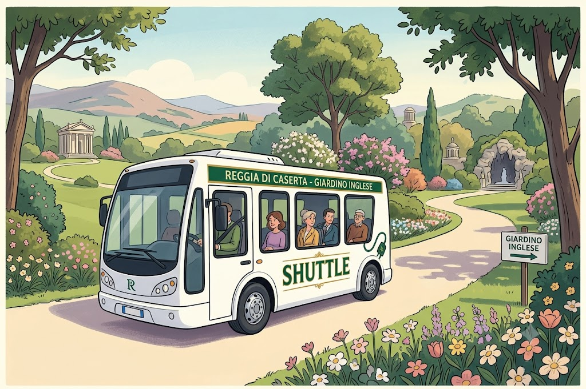
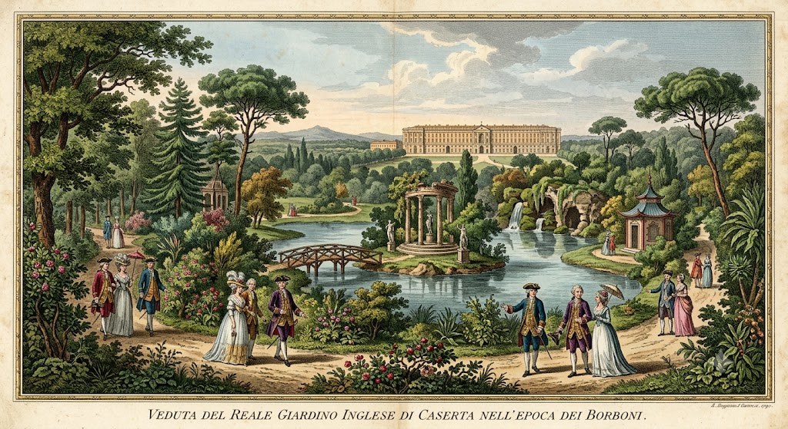
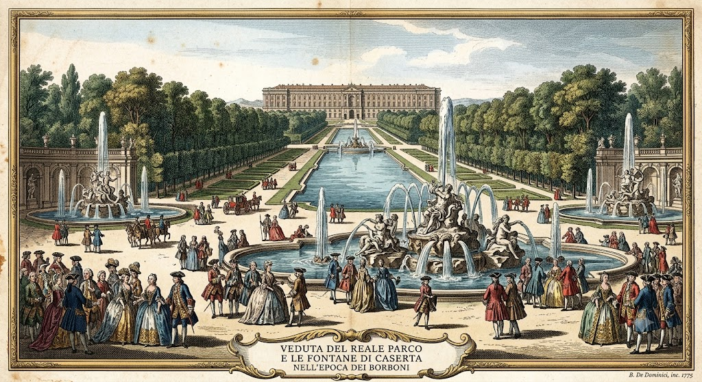

Привет! Я — ваш цифровой гид! Сегодня Антонио, Асель, Камилла и Сара отправляются на завоевание Королевского дворца в Казерте. Вы готовы раскрыть главные тайны династии Бурбонов с помощью крутых челленджей, квизов и настоящих приключений?
Послушайте приветствие:

🏰 Тайны Парадной Лестницы
Добро пожаловать на самую большую королевскую лестницу в мире! Включите режим детективов и смотрите в оба:
🕵️♀️ Охота за деталями:
«Призрачная» музыка: Посмотрите наверх. Между двумя сводами потолка архитектор прятал целый оркестр. Гости слышали музыку, которая лилась буквально из ниоткуда!
Каменные стражи: Найдите двух львов. Они символизируют силу оружия и силу разума. Какая сила вам ближе?
Статуи правосудия: На вершине первого пролета вас ждут три величественные статуи. В центре — Королевское Величие (Король), но посмотрите внимательно слева от него: там стоит статуя Истины. Легенда гласит, что каждый, кто поднимался по этой лестнице на встречу с Королем, должен был посмотреть статуе прямо в глаза и поклясться всегда говорить правду. А вам хватило бы смелости сделать это?
📐 Трюк с перспективой: устройте проверку! Пусть одна из вас останется в самом низу, а вторая поднимется наверх. Посмотрите друг на друга — вы покажетесь друг другу невероятно маленькими! Король специально использовал этот оптический фокус, чтобы поразить и впечатлить своих гостей с первых секунд.
🏛 Парадные залы
Парадные залы Королевского дворца в Казерте (куда входят Зал Алебардщиков, Зал Телохранителей и Зал Александра) — это самые первые, огромные салоны, в которые гости попадали сразу после Парадной Лестницы.
У этих монументальных залов была одна четкая цель: поразить посетителей и продемонстрировать абсолютную власть Короля еще до того, как они смогут подойти к его личным покоям.
Выбирайте, какой зал вы отправитесь исследовать первым:

🛡 Зал Алебардщиков
Первая королевская застава
💂♂️ Кто такие алебардщики?
Представьте себе личных «вышибал» Короля. Это были самые элитные солдаты, вооруженные алебардами (длинными копьями с топориками). Ни один гость дворца не мог пройти через эту комнату без их разрешения.
🕵️♀️ Охота за деталями:
Эскиз в Лувре: На потолке вы увидите фреску, где Геракл прогоняет пороки. Рисунок-черновик этой картины (эскиз) получился настолько крутым, что сегодня он хранится в самом Музее Лувра в Париже!
Оружие и Искусство: Найдите на стенах каменные украшения в виде военных трофеев. А теперь посмотрите над дверями: там красуются 8 женских бюстов. Они символизируют Искусства познания (Музыку, Астрономию, Математику, Поэзию, Геометрию, Грамматику, Риторику и Диалектику).
Парад Королев: Отыщите в зале мраморные бюсты четырех знаменитых королев: Марии Каролины, Марии Изабеллы, Марии Кристины и Марии Софии.
📸 Два фоточелленджа:
Эффект света: Встаньте в самый центр зала и сделайте фото снизу вверх, чтобы в один кадр поймать гигантскую люстру и старинную фреску на потолке.
Королевская поза: Выберите одну из королев, встаньте рядом в профиль и скопируйте ее гордый и величественный взгляд!

👑 Зал Александра: Граница времени
Добро пожаловать в самый центр фасада! Этот зал — невидимая граница между восемнадцатым веком (налево) и девятнадцатым веком (направо).
🎭 Великий «промах» архитектора:
У архитектора Карло Ванвителли чуть сердце не остановилось, когда он увидел готовый потолок: колонны на стенах казались слишком тонкими по сравнению с нарисованными великанами! Чтобы не переделывать всё заново, ему пришлось придумать хитрые декоративные трюки, чтобы визуально «расширить» колонны.
🕵️♀️ Охота за сокровищами: 3 секретные детали
Камин со сфинксами: Найдите камин из белого мрамора с профилем Александра Македонского и двумя загадочными сфинксами из черного мрамора по бокам.
«Парижские» кресла и секретная буква «N»: Отыщите два позолоченных трона с ручками из слоновой кости, которые привезли прямо из Парижа для Иоахима Мюрата и его жены Каролины Бонапарт [https://cultura.gov.it]. Изначально они были сделаны для самого императора Наполеона Бонапарта, но тот от них отказался! Присмотритесь к ножкам кресел: сможете ли вы отыскать на них букву «N» Наполеона [https://cultura.gov.it]?
Кони и короли: Найдите картину, на которой король Карл передает корону своему сыну Фердинанду, которому на тот момент было всего 8 лет!
📸 Фоточеллендж: Перекресток веков
Встаньте в самый центр зала. Слева от вас — прошлое (1700-е годы), а справа — будущее (1800-е годы). Сделайте фото, широко раскинув руки, как самые настоящие путешественницы во времени!
👣 Следующая остановка:
Готовы сменить время года? Выходите из зала и поворачивайте налево: вас ждет яркий и красочный Зал Четырех Сезонов!

🌸☀️ Зал Четырех Сезонов 🍂❄️
Секретная гостиная наследных принцев
Добро пожаловать в крыло XVIII века (Старые покои). Здесь атмосфера полностью меняется: мы находимся в личных комнатах, где принц Фердинанд IV и принцесса Мария Каролина Австрийская отдыхали и играли вдали от посторонних глаз придворных. Это четыре соединенные комнаты, каждая из которых посвящена одному времени года!
🕵️♀️ Охота за сокровищами: Найди символы природы
Зал Весны: Найдите богиню Флору, увенчанную свежими цветами и окруженную амурами, летающими в ясном небе.
Зал Лета: Отыщите золотые колосья пшеницы и большие колесницы, посвященные Церере, богине земледелия.
Зал Осени: Посмотрите наверх, чтобы найти гроздья винограда, виноградные лозы и праздник, посвященный Вакху, богу вина.
Зал Зимы: Небо здесь хмурое и облачное; обратите внимание на аллегорию зимы, которая пытается согреться возле горящего костра.
💡 2 Секретные фишки, которые нужно заметить:
Хрустальные люстры: Над вашими головами висят великолепные люстры из ценнейшего муранского стекла, привезенного прямо из Венеции!
Сказочные часы: В Зале Зимы найдите драгоценные маятниковые часы в форме маленького храма, которые привезли прямо из Франции.
📸 Два фоточелленджа:
Смена сезона: Выберите комнату, которая соответствует месяцу вашего рождения. Встаньте в центр, под муранскую люстру, и сделайте селфи, глядя вверх на фреску.
Каменный стол: В Зале Лета найдите столик со столешницей из окаменелого дерева. Сделайте макрофотографию деталей поверхности: она выглядит как камень, но когда-то была настоящим деревом!
👣 Что вы хотите сделать теперь?
Ваше приключение продолжается! Вы можете выбрать один из следующих вариантов:
Продолжить осмотр: Идите дальше, чтобы по порядку открыть для себя Кабинет Фердинанда IV (его личное убежище), Будуар Марии Каролины (интимную комнату Королевы) и грандиозную Палатинскую библиотеку.
Сменить маршрут: Вернитесь назад через Зал Александра, чтобы дойти до Зала Астреи.

⚖️ Зал Астреи
Приемная секретов и послов
Добро пожаловать в крыло девятнадцатого века (Новые покои). Этот зал был официальной комнатой ожидания для дипломатов и иностранных послов, которые ждали приема при дворе. Он полностью посвящен Астрее, мифической богине Справедливости. Французские правители Иоахим Мюрат и его жена Каролина Бонапарт (сестра Наполеона, которые были назначены Королем и Королевой Неаполя!) велели украсить этот зал, чтобы послать гостям четкий сигнал: «В этом королевстве правит закон!».
🕵️♀️ Охота за деталями:
Напольный лабиринт: Взгляните под ноги. Пол из каррарского мрамора повторяет самый настоящий геометрический лабиринт — символ трудного пути к обретению истины и знаний.
Тайная маскировка на потолке: Автор фрески — Жак Берже. Изначально у Астреи было лицо королевы Каролины Бонапарт [https://cultura.gov.it]. После падения французской власти, чтобы избежать неприятностей, художник хитро добавил золотые лилии (символ Бурбонов) на корону богини, чтобы сделать вид, будто картина всегда была посвящена новым правителям!
Статуи над каминами: Найдите над каминами великолепные позолоченные горельефы с изображениями Астреи, богини Минервы, крылатых гениев и лебедей.
📸 Два фоточелленджа:
Напольный квест: Выберите одну линию лабиринта на полу. Пусть вас снимут на видео, пока вы идете идеально прямо строго по темным полосам, как в секретном лабиринте!
Невинность против Ошибки: Выберите двух разных персонажей с фрески на потолке (одного гордого и одного испуганного). Встаньте в позы напротив друг друга, копируя их выражения лиц!

👑 Тронный Зал: Сердце власти
Грандиозный финал покоев
Вы пришли в самый большой и важный зал всего дворца. У этого зала была невероятно долгая история: начатый в 1811 году, он строился более 30 лет и был открыт только в 1845 году! Именно здесь Король принимал дипломатов и устраивал самые торжественные церемонии. Это настоящее буйство сусального золота, которое заставит вас почувствовать себя крошечными!
🕵️♀️ Охота за деталями в Тронном Зале:
Трон с русалками: Подойдите ближе, чтобы рассмотреть золотые детали. Подлокотники сделаны в форме крылатых львов, а у основания притаились маленькие сирены (русалки) — символ Неаполя!
Потолок Дженнаро Мальдарелли: Полюбуйтесь фреской 1844 года: на ней изображен король Карл Бурбон, закладывающий самый первый камень в фундамент этого дворца. Это настоящий «исторический комикс» прямо над вашими головами!
Королевские символы: Отыщите на стенах и золотых элементах отделки геральдические лилии — официальный символ династии Бурбонов.
📸 Челлендж: Портрет Правителя
Встаньте перед троном (ничего не трогая!). Сделайте фото, притворившись абсолютными правителями королевства: одна с вытянутой рукой, а вторая с гордым взглядом, направленным на ваших «гостей». Идеальный момент для кадра в роли настоящих королев!
🚪 🛏️ Королевские покои: В повседневной жизни
Выходя из Тронного зала, маршрут ведет вас прямо в самое сердце Королевских покоев. Здесь мы переходим от политики к повседневной жизни королей, королев и принцесс.
🕵️♀️ Охота за деталями в личных покоях:
Потайные ходы в библиотеке: Исследуйте залы Палатинской библиотеки (где хранится более 14 000 старинных книг!). Многие книжные шкафы здесь фальшивые и скрывают секретные двери, которыми пользовались члены королевской семьи.
Первое биде в Италии: В ванной комнате королевы Марии Амалии найдите мраморную ванну и загадочный предмет, который прибывшие позже пьемонтцы перепутали в описи с «гитарой»!
Гигантский вертеп: Найдите зал со старинным Королевским рождественским вертепом: он огромен, проработан до мельчайших деталей, а фигурки одеты в настоящий шелк той эпохи.
🖼️ Гран-Галерея: Зал рекордов
Это абсолютно самое большое отдельное помещение во всем дворце! Этот огромный коридор со сводчатым потолком (высотой 16 метров!) когда-то соединял покои Короля с комнатами Наследного принца.
📸 Последний челлендж: Королевская перспектива
Встаньте в начале зала. Снимите видео, на котором одна из вас уходит вдаль к противоположному концу, а вторая её снимает: визуальный эффект будто сужающихся стен создаст идеальный перспективный ролик!
👣 Навстречу парку:
Теперь внутренняя часть дворца окончательно прощается с вами. Пройдя Гран-Галерею, пора выйти на свежий воздух и отправиться в бескрайний Королевский парк, чтобы открыть для себя водопады, брызги фонтанов и загадочные Английские сады!

🚌 🌲 Навстречу природе: Шаттл в Английский сад
Секретный портал в сказочные джунгли
После прогулки среди золота и мрамора дворца самое время перезагрузиться! Чтобы добраться до самой высокой точки парка и не устать, вы прокатитесь на официальном автобусе-шаттле Реджии.
🚌 Миссия в шаттле:
Как это работает: Шаттл забирает пассажиров прямо у выхода из дворца. Он довезет вас до самого верха, проезжая вдоль огромных бассейнов и фонтанов растянувшихся на целых 3 километра.
Игра на борту: Садитесь поближе к окну. Во время подъема внимательно смотрите на воду: бассейны полны огромных рыб и лебедей. Автобус высадит вас на остановке прямо у подножия великолепного Большого водопада (высотой целых 70 метров!) и у входа в таинственный Английский сад.

🌿 Английский сад: Лес Иллюзий
В отличие от геометрических садов у самого дворца, это место кажется диким лесом, но всё это — хитрый трюк! Его создание одобрила королева Мария Каролина, чтобы поразить всю Европу. Каждое дерево, фальшивые руины и небольшое озеро были спроектированы так, будто появились здесь по взмаху волшебной палочки.
🕵️♀️ Охота за секретами в саду:
Королева камелий: Отыщите знаменитую «Материнскую камелию». Это древнейшее растение — самая первая камелия, попавшая в Европу из Японии в XVIII веке в качестве драгоценного подарка для Королевы!
Купальня Венеры (Заколдованный пруд): Прогуливаясь по тропинкам, вы найдете спрятанное маленькое озеро в окружении гигантских деревьев. Прямо посреди воды среди скал возвышается красивая статуя богини Венеры. Место выглядит точь-в-точь как секретный уголок из сказки.
Криптопортик (Фальшивые руины): Это самое загадочное место. Вы войдете в имитацию полуразрушенного римского храма. Архитекторы специально построили его «уже сломанным», чтобы подарить гостям ощущение, будто они нашли заброшенный город-призрак, забытый временем!
📸 Два фоточелленджа:
Зеркало Венеры: Найдите у заколдованного пруда точку, где вода абсолютно спокойна, и сделайте снимок так, чтобы статуя Венеры идеально отражалась на водной глади, словно в волшебном зеркале.
Исследовательницы затерянного храма: Внутри Криптопортика встаньте в позу между каменными колоннами, приложив руку ко лбу и удивленно глядя вверх. Вы будете выглядеть как две отважные женщины-археологи, которые только что обнаружили древний клад!

💦 Спуск по фонтанам: Дорога воды
Пешее возвращение среди каменных великанов
После исследования секретного леса начинается обратный путь к дворцу! В этот раз вы прогуляетесь строго вниз (около 3 километров), следуя по течению воды среди великолепных фонтанов со множеством гигантских статуй.
🕵️♀️ Охота за историями из камня (Сверху вниз):
Собачий водопад (Диана и Актеон): Это самый невероятный фонтан! Слева богиня Диана купается с нимфами, а справа Актеон, превращенный в оленя, пытается спастись от собственных охотничьих псов.
Фонтан Дельфинов: Вода бьет из пастей трех жутких каменных дельфинов с причудливыми и сердитыми мордами — именно так их представляли в XVIII веке.
Фонтан Эола (Бога Ветров): Настоящая театральная сцена: огромная пещера, из которой божества ветров (Зефиры) дуют изо всех сил, чтобы устроить морскую бурю.
💡 Оптический трюк с иллюзией близости:
Посмотрите на дворец в самом конце аллеи: он кажется совсем рядом, верно? Это оптический фокус архитектора Ванвителли, который спроектировал бассейны по специальным размерам, чтобы дорогая казалась намного короче, чем она есть на самом деле!
📸 Два фоточелленджа:
Атака дельфинов: Встаньте перед одной из огромных каменных пастей и притворитесь сильно испуганными, будто «морское чудовище» вот-за вот вас схватит!
Бесконечная перспектива: Остановитесь в центре водной аллеи и сделайте фото со спины, глядя в сторону дворца. Вы окажетесь точно в самом центре симметричной живой картины.